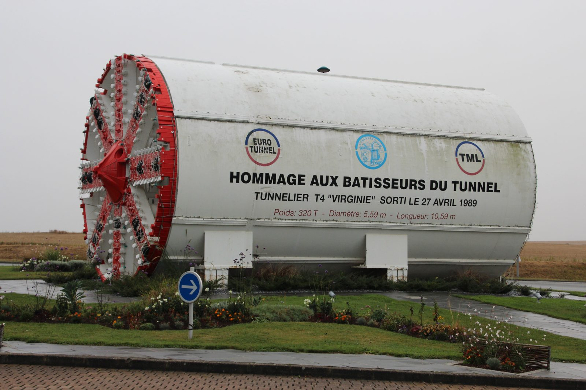

Em meados do século XIX, o café do interior de São Paulo descia ao porto de Santos, no litoral paulista, em lombo de mula. No caminho havia a Serra do Mar, uma escarpa que sobe quase de uma vez a perto de 800 metros, coberta de Mata Atlântica. Uma companhia inglesa, a São Paulo Railway, recebeu a missão de pôr uma ferrovia ali com um capital fixado em 2 milhões de libras, sem garantia para um centavo a mais.
Uma linha comum de locomotiva teria de serpentear por mais de 40 quilômetros só para vencer a serra. A solução foi outra: cortar a encosta em quatro rampas de cerca de 10% e içar os trens por cabo de aço, com máquinas a vapor fixas no alto de cada rampa, um trem subindo enquanto outro descia na outra ponta do mesmo cabo. A linha abriu em 16 de fevereiro de 1867, dez meses antes do prazo.
FICHAFicha da obra
| Por quê | Levar o café do interior paulista ao porto de Santos sem depender das tropas de mulas que desciam a Serra do Mar por estradas de terra e calçada de pedra. | 2+ fontes |
|---|---|---|
| Quem quis | O Barão de Mauá, o Marquês de Monte Alegre e o conselheiro José Antônio Pimenta Bueno, que receberam a concessão do Império em abril de 1856, com juros de 7% garantidos sobre um capital máximo de £ 2 milhões; um decreto de outubro de 1859 estendeu a garantia a 90 anos. A companhia foi formada em Londres em dezembro de 1859.o dia do decreto aparece como 20 ou 26 de abril, conforme a fonte | 2+ fontes |
| Projeto | O engenheiro escocês James Brunlees, de Londres, decidiu pelos planos inclinados. O traçado foi levantado a partir de 1856 por Daniel Makinson Fox, então com 26 anos, que depois chefiou a obra como engenheiro residente. A mecânica dos planos foi desenhada por R. F. Welby, e as máquinas, feitas pela Fairbairn & Co., de Manchester.o nome de Welby e o fabricante das máquinas vêm de uma fonte só, a descrição de Fox | 2+ fontes |
| Quem construiu | A empreiteira inglesa Robert Sharpe & Sons, contratada em 08/02/1860, que sublocou a maior parte do trabalho em pequenas empreitadas; empreiteiros norte-americanos fizeram trechos pesados entre São Paulo e Jundiaí. | 2+ fontes |
| O sistema da serra | Quatro planos de rampa 1 em 9,75, perto de 10%, com uma casa de máquinas a vapor fixas no alto de cada um. No chamado sistema tail-end, um trem subia preso a uma ponta do cabo enquanto outro descia na outra. Cada viagem levava, em 1869, até 40 toneladas, em cerca de 15 minutos por plano.a carga e o tempo por plano vêm da descrição de Fox; mais tarde a carga passou a 60 toneladas | 2+ fontes |
| Prazo | Primeira pá em maio de 1860; viaduto da Grota Funda iniciado em julho de 1863 e atravessado pelo primeiro trem em novembro de 1865; trilhos em Jundiaí em julho de 1866; abertura ao tráfego em 16/02/1867, dez meses antes dos oito anos do contrato.algumas fontes dão 15/03 ou novembro de 1860 como início das obras | 2+ fontes |
| Operários | Cerca de 3.500 no pico, "de todas as nacionalidades e cores", segundo o engenheiro residente Daniel Fox: portugueses e ilhéus dos Açores e da Madeira em maior número, alemães, brasileiros, encarregados ingleses. O total de trabalhadores não foi registrado. A concessão proibia o uso de escravizados, mas documentos de 1863 mostram que eles trabalharam na obra. | 1 fonte |
| Salário | De 4 xelins e 6 pence a 6 xelins por dia durante a obra, segundo Fox. | 1 fonte |
| Mortes na construção | Nenhuma fonte consultada dá um total. Os mapas de acidentes do engenheiro fiscal do governo, de 1861 a 1863, registram mortes por afogamento, explosão de pólvora e esmagamento, com o nome das vítimas, segundo pesquisa do historiador Paulo Rodrigues de Andrade. | sem registro |
| Custo | Contrato de £ 1.745.000; com os extras, £ 1.817.917 pagos às empreiteiras, mais um bônus de £ 43.750 do governo pela entrega antecipada. Fox calculou £ 31.570 por milha com os juros pagos durante a obra, o que dá por volta de £ 2,7 milhões; um estudo publicado na revista Arquitextos fala em £ 2,75 milhões.corrigido só pela inflação britânica (índice de preços do ONS, fator de cerca de 145 entre 1867 e 2026), o contrato equivale a uns £ 254 milhões de 2026 | diverge |
| Medidas | Desnível de 2.557 pés (cerca de 779 m) a partir do pé da serra, ou 2.652 pés (cerca de 808 m) acima do mar, pela medição de Fox; outras fontes dão 762 m ou 796,6 m. Planos de 1.781 a 2.139 m, somando uns 8 km. Linha de 139 km, bitola de 1,60 m. | diverge |
| Serra Nova | Na virada para o século XX, a companhia duplicou a linha e abriu um segundo funicular, de cinco planos de 8%, com máquinas fixas de 1.000 cavalos movendo um cabo sem fim, ao qual se prendiam, por uma tenaz, pequenas locomotivas que levavam os vagões, os locobreques.o início das obras e a inauguração aparecem como 1895 ou 1896 e 1900 ou 1901, conforme a fonte | 2+ fontes |
| Encampação | Em 13/09/1946, ao fim dos 90 anos da concessão, o Decreto-Lei nº 9.869 passou a ferrovia para a União; ela virou Estrada de Ferro Santos a Jundiaí. | 2+ fontes |
| Cremalheira | Em 1974 a Rede Ferroviária Federal inaugurou, no leito dos planos de 1867, um sistema de cremalheira com locomotivas japonesas Hitachi; a MRS Logística, que opera o trecho de carga, passou a usar locomotivas suíças Stadler a partir de 2012. O primeiro funicular parou em 1970 ou 1974, e o segundo em 1976 ou 1982, conforme a fonte. | diverge |
| Paranapiacaba | O canteiro do Alto da Serra, de 1861, virou a vila ferroviária hoje chamada Paranapiacaba, em Santo André, com a Vila Martin Smith, aberta pela companhia em 1897. Tombada pelo Condephaat em 1987 e pelo Iphan, e comprada pela Prefeitura de Santo André em 2002. Está na Lista Indicativa do Brasil à UNESCO desde 2014.o tombamento do Iphan aparece como 2002 ou 2008, conforme a fonte | 2+ fontes |
| Hoje | Em 31/03/2026, o governador Tarcísio de Freitas disse que restaurar o funicular abandonado parecia a opção mais viável para o futuro trem de passageiros São Paulo–Santos; o estudo segue aberto, com audiência pública prevista para 2027. Desde julho de 2026, a passarela metálica da vila está em restauro. | 2+ fontes |
01Uma parede entre o café e o mar
A Serra do Mar corre paralela ao litoral de São Paulo e sobe quase de uma vez. Na descrição que o engenheiro Daniel Makinson Fox apresentou em 1870 à Institution of Civil Engineers, em Londres, ela se ergue "abruptamente" a no mínimo 2.500 pés, uns 760 metros, coberta de floresta. Por ali passavam, havia séculos, trilhas indígenas, a Calçada do Lorena, de 1792, e a Estrada da Maioridade, dos anos 1840, todas a pé ou em lombo de mula.
Do outro lado ficava o planalto paulista, onde o café se espalhava rápido. Fox calculava a produção da província em 80 milhões de libras-peso por ano. Tudo tinha de descer até Santos. A ideia de uma ferrovia existia desde os anos 1830, foi retomada pelo Barão de Mauá em 1853 e 1854 e travou de novo com a Guerra da Crimeia. Em abril de 1856, o Império deu a concessão a Mauá, ao Marquês de Monte Alegre e ao conselheiro José Antônio Pimenta Bueno.
_-_1-03795-0000-0000,_Acervo_do_Museu_Paulista_da_USP.jpg){kind=link}
02Uma conta que não fechava
A concessão garantia juros de 7%, prazo depois estendido a 90 anos, sobre um capital máximo de 2 milhões de libras esterlinas, e Fox registra que ficou "distintamente entendido" que não haveria garantia para capital adicional. Mauá entregou o projeto ao engenheiro escocês James Brunlees, que mandou Fox, de 26 anos, para o Brasil no começo de 1856.
A ordem de Londres era traçar uma linha comum de locomotiva. Fox conta que bastou ver o terreno para concluir que isso não caberia no dinheiro. A comparação que ele fez é com a Estrada de Ferro Dom Pedro II, que subia a serra perto do Rio de Janeiro, onde a montanha é mais baixa: no mesmo padrão, a subida paulista exigiria pelo menos 26 milhas, uns 42 quilômetros de rampa contínua, e custaria só na serra £ 1,5 milhão. Brunlees decidiu pelo atalho: planos inclinados, com rampa de 1 em 10, puxados por máquinas fixas.
O levantamento levou uns quinze meses. Segundo Fox, a equipe passava três semanas seguidas dentro da mata, em cabanas cobertas de folha de palmito, e saía de lá "desbotada pela falta de sol".
_-_1-03800-0000-0000,_Acervo_do_Museu_Paulista_da_USP.jpg){kind=link}
03Quatro rampas e um cabo
O que se construiu foram quatro planos de rampa 1 em 9,75, pouco mais de 10%, com comprimentos entre 1.781 e 2.139 metros pela medição de Fox, somando uns 8 quilômetros. No alto de cada um, um patamar quase plano de uns 76 metros abrigava a casa de máquinas: um par de máquinas a vapor de 158 cavalos nominais, alimentado por cinco caldeiras. O cabo, de fios de aço, era testado para 35 toneladas e durava cerca de dois anos.
O sistema tinha nome inglês, tail-end. Um trem era preso a uma ponta do cabo e outro à ponta oposta: enquanto um subia, o outro descia, e o peso do que descia ajudava a máquina. No meio de cada plano os trilhos se abriam em desvio para os dois se cruzarem. Cada composição levava três vagões e um vagão-freio com uma pinça capaz de morder os trilhos e parar o trem em poucos metros, usada também nos dias de neblina, quando o trilho ficava escorregadio.
Em 1869, segundo Fox, cada viagem subia no máximo 40 toneladas e levava uns 15 minutos por plano, uma hora na serra inteira. Os locobreques, as pequenas locomotivas que agarravam o cabo e que hoje se associam ao funicular, só chegaram com o segundo sistema, na virada para o século XX.
_-_1-03792-0000-0000,_Acervo_do_Museu_Paulista_da_USP.jpg){kind=link}
04A serra que escorregava
O problema maior não foi a rampa, foi o chão. Os cortes chegaram a 75 e 95 pés de profundidade, e os taludes, a 330 pés de comprimento. Fox escreve que "aterro após aterro foi levado durante a construção", às vezes depois de pronto. A saída foi drenar tudo: recolher a água da encosta acima da linha e atravessá-la por canais de pedra, revestir os aterros e escorar os cortes com muros de pedra seca de até 60 pés. Ao todo, foram 1,2 milhão de jardas cúbicas de escavação, perto de 920 mil metros cúbicos.
Ao pé do quarto plano, um vale foi vencido pelo viaduto da Grota Funda, de uns 215 metros, com 185 pés de altura no ponto mais fundo. Não houve andaime: um cabo foi esticado de um lado ao outro do abismo e as colunas de ferro desceram por ele, peça por peça. A primeira pedra foi posta em julho de 1863, e o primeiro trem passou em novembro de 1865. A linha inteira abriu em 16/02/1867. O contrato dava oito anos, até o fim de 1867, e a empreiteira Robert Sharpe & Sons ganhou do governo um bônus de £ 43.750 pelos dez meses de antecipação.

05Quem abriu a serra
Fox estimou que o maior número de homens na obra ao mesmo tempo foi "provavelmente cerca de 3.500, de todas as nacionalidades e cores". Os mais numerosos, segundo ele, eram portugueses e ilhéus dos Açores e da Madeira; havia alemães, brasileiros que trocavam a roça pelo salário e voltavam no plantio, e ingleses como encarregados e maquinistas. O salário ia de 4 xelins e 6 pence a 6 xelins por dia. O total de trabalhadores não foi registrado.
Fox também escreveu que, embora o Brasil fosse escravista, a concessão obrigava a usar trabalho livre. Os documentos contam outra história. Num ofício de julho de 1863 ao presidente da província, o superintendente da companhia, J. J. Aubertin, admitiu que a obra usava escravizados havia mais de três anos, "não sem alguma permissão tácita" do governo. Os mapas de acidentes do engenheiro fiscal Wallace da Gama Cochrane, de 1861 a 1863, citam dez trabalhadores escravizados pelo nome. O historiador Paulo Rodrigues de Andrade, que levantou esses papéis, conclui que a presença de escravos na obra foi a regra, não a exceção.
Ninguém publicou quantos morreram. O que existe são nomes: João, afogado em janeiro de 1861; Benedicto Cotovi, queimado por pólvora em setembro do mesmo ano; dois escravizados mortos em 1862, um esmagado por uma pedra, outro afogado; o português José Fernandes, que morreu dois dias depois de uma explosão numa mina da serra, em outubro de 1862.
.jpg){kind=link}
06A ferrovia mais rica e o segundo funicular
A conta final ficou acima do previsto, mas não muito longe. O contrato com a Sharpe foi de £ 1.745.000, e as empreiteiras receberam £ 1.817.917. Com os juros pagos durante a obra, Fox chegou a £ 31.570 por milha, o que dá perto de £ 2,7 milhões para a linha; o capital garantido em 1869 era de £ 2.650.000. Com o café, a São Paulo Railway chegou a ser descrita na imprensa técnica inglesa como talvez a ferrovia mais rica do mundo.
O tráfego cresceu tanto que, na virada para o século XX, a companhia duplicou a linha e abriu um segundo funicular, a Serra Nova: cinco planos de 8%, uns 10 quilômetros, máquinas de 1.000 cavalos e um cabo sem fim agarrado pelos locobreques. Os dois sistemas trabalharam lado a lado por décadas. Em 13/09/1946, ao fim dos 90 anos da concessão, a ferrovia passou à União e virou Estrada de Ferro Santos a Jundiaí.
Nos anos 1970, a Rede Ferroviária Federal desmontou o primeiro funicular e, em 1974, inaugurou no mesmo leito um sistema de cremalheira, com locomotivas japonesas. O segundo funicular parou de vez em 1976 ou em 1982, conforme a fonte. É sobre os planos de 1867 que os trens de carga da MRS ainda descem a serra.
07A vila no alto e a volta do funicular
No alto da serra, o canteiro de obras de 1861 virou vila. A companhia precisava manter ali quem operava as máquinas, e em 1897 abriu a Vila Martin Smith, planejada em xadrez, com casas de madeira distribuídas pela hierarquia da empresa. O Alto da Serra é hoje Paranapiacaba, distrito de Santo André. Foi tombado pelo Condephaat em 1987 e pelo Iphan, comprado pela prefeitura em 2002 e posto pelo Brasil na Lista Indicativa da UNESCO em 2014. Em julho de 2026 começou a restauração da passarela metálica que liga as duas partes da vila, orçada em R$ 18 milhões.
Em 31/03/2026, o governador Tarcísio de Freitas falou do trem de passageiros que o estado estuda entre São Paulo e Santos: "Por incrível que pareça, o que está parecendo mais viável é restaurar o funicular que está abandonado há muito tempo". O estudo continua aberto, com audiência pública prevista para 2027, e não há traçado definido. A ideia de puxar trens serra acima por cabo, que os ingleses escolheram por falta de dinheiro, voltou à mesa um século e meio depois.
MITOSO que circula e o que o registro diz
- O que circula
A ferrovia foi construída só com trabalho livre, porque a concessão proibia escravos.
O que o registro dizA proibição existia, e o engenheiro residente escreveu que ela foi cumprida. Mas num ofício de 1863 o superintendente da companhia admitiu ao governo que usava escravizados "não sem alguma permissão tácita", e os mapas de acidentes de 1861 a 1863 citam dez deles pelo nome.
- O que circula
Os planos inclinados tinham 10 graus de inclinação.
O que o registro dizA rampa era de 1 em 9,75, ou seja, cerca de 10%: o trem subia 1 metro a cada 9,75 andados. Dez graus seriam quase 18%.
- O que circula
Desde 1867 os trens eram puxados pelos locobreques.
O que o registro dizNo primeiro sistema, o cabo era preso a um vagão-freio sem motor. Os locobreques, pequenas locomotivas com uma tenaz para agarrar o cabo, foram comprados para o segundo funicular, a Serra Nova, aberto na virada para o século XX.
- O que circula
A estrada foi aberta sem explosivos, por causa da encosta instável.
O que o registro dizA descrição da obra fala em minas e túneis, e os mapas de acidentes registram trabalhadores queimados por pólvora e um morto por explosão numa mina da serra, em 1862.
- O que circula
O orçamento era de 200 mil libras e o custo dobrou.
O que o registro dizO capital garantido era de 2 milhões de libras. O contrato foi de £ 1.745.000, e o custo total, com os juros pagos durante a obra, ficou perto de £ 2,7 milhões.
PERGUNTASPerguntas frequentes
Quando foi construída a Estrada de Ferro Santos-Jundiaí?
Entre 1860 e 1867. A primeira pá foi em maio de 1860, e a linha de 139 km, de Santos a Jundiaí passando por São Paulo, abriu ao tráfego em 16/02/1867, dez meses antes do prazo do contrato.
Quem construiu a Estrada de Ferro Santos-Jundiaí?
A companhia inglesa São Paulo Railway, formada em Londres em 1859 a partir da concessão dada ao Barão de Mauá, ao Marquês de Monte Alegre e a Pimenta Bueno. O engenheiro escocês James Brunlees decidiu pelos planos inclinados, Daniel Makinson Fox chefiou a obra e a empreiteira foi a Robert Sharpe & Sons.
Como o trem subia a Serra do Mar na Santos-Jundiaí?
Por cabo de aço. A encosta foi cortada em quatro planos inclinados de cerca de 10%, somando uns 8 km, com uma casa de máquinas a vapor fixas no alto de cada um; um trem subia preso a uma ponta do cabo enquanto outro descia na outra.
Quantas pessoas morreram na construção da Estrada de Ferro Santos-Jundiaí?
Ninguém publicou um total. Os mapas de acidentes do engenheiro fiscal do governo, de 1861 a 1863, registram mortes por afogamento, explosão de pólvora e esmagamento, com o nome das vítimas, entre elas trabalhadores escravizados.
Quanto custou a Estrada de Ferro Santos-Jundiaí?
O contrato da obra foi de £ 1.745.000, e as empreiteiras receberam £ 1.817.917 com os extras. Com os juros pagos durante a obra, o custo total fica perto de £ 2,7 milhões pela conta do engenheiro residente; um estudo da revista Arquitextos fala em £ 2,75 milhões.
Episódio em produção
Toda semana, uma obra que não deveria ter ficado de pé.

Eurotúnel
Sob o estreito de Dover, entre Folkestone, Kent, Inglaterra, e Coquelles, Pas-de-Calais, França · 1987–1994Cavar três túneis de 50 quilômetros, quase 40 deles sob o mar, a partir de duas costas e de dois países com mapas diferentes, seguindo uma única camada de rocha mole, para que as máquinas se encontrassem no meio sem nenhum dinheiro de governo.
Ler a obra →MAISLeia também
FONTESFontes
- Daniel Makinson Fox, "Description of the Line and Works of the São Paulo Railway in the Empire of Brazil", Minutes of Proceedings of the Institution of Civil Engineers, vol. 30, 1870 — upload.wikimedia.org
- Paulo Rodrigues de Andrade, "Trabalhadores escravos nas obras de construção da SPR na década de 1860", Aedos (UFRGS), v. 7, n. 17, 2015 — seer.ufrgs.br
- Cecília Rodrigues dos Santos, Claudia Lage e Gustavo Secco, "Patrimônio: São Paulo Railway 150 anos", Arquitextos, Vitruvius, 2017 — vitruvius.com.br
- Thaís Fátima dos Santos Cruz (FAU-USP), "Funiculares da vila ferroviária de Paranapiacaba: reminiscências, remanescentes e permanências", 2011 — patrimonioindustrial.cl
- Thaís Fátima dos Santos Cruz, "No meio do caminho... uma serra, a ferrovia, o café e uma vila", Seminário de Patrimônio Agroindustrial, IAU-USP — iau.usp.br
- Grace's Guide, "Sao Paulo Railway" — gracesguide.co.uk
- Grace's Guide, "James Brunlees" — gracesguide.co.uk
- Decreto-Lei nº 9.869, de 13 de setembro de 1946, Câmara dos Deputados — www2.camara.leg.br
- Prefeitura de Santo André, "A Vila" (Paranapiacaba) — www3.santoandre.sp.gov.br
- Prefeitura de Santo André, "Paranapiacaba terá passarela restaurada com investimento de R$ 18 milhões", 2026 — web.santoandre.sp.gov.br
- Metrô CPTM, "Tarcísio cita reativação de funicular como alternativa para Trem Intercidades até Santos", 31/03/2026 — metrocptm.com.br
- Via Trolebus, "O que sabemos sobre o Trem SP-Santos (Atualizado 2026)", 2026 — viatrolebus.com.br
- UNESCO, Lista Indicativa, "Cultural Landscape of Paranapiacaba: Village and railway systems in the Serra do Mar Mountain Range, São Paulo" — whc.unesco.org
- Office for National Statistics (via officialdata.org), índice de preços ao consumidor do Reino Unido, 1867–2026 — officialdata.org
- Wikipédia, "São Paulo Railway" e "Funicular de Paranapiacaba" (ponto de partida) — pt.wikipedia.org
Imagens
- Fig. 01 — A linha da São Paulo Railway na encosta da Serra do Mar, por volta de 1900, fotografada por Guilherme Gaensly: Guilherme Gaensly (Museu Paulista da USP) · Domínio público
- Fig. 02 — Uma das casas de máquinas no alto de um plano inclinado, em cartão-postal do início do século XX. Daqui a máquina a vapor puxava o cabo: Autor não identificado (cartão-postal, Museu Paulista da USP) · Domínio público
- Fig. 03 — Vista geral dos planos inclinados na serra, em cartão-postal do início do século XX: os cortes na encosta, um túnel e um vagão em plena rampa: Autor não identificado (cartão-postal, Museu Paulista da USP) · Domínio público
- Fig. 04 — Um dos viadutos de ferro dos planos inclinados, em cartão-postal do início do século XX: Autor não identificado (cartão-postal, Museu Paulista da USP) · Domínio público
- Fig. 05 — Galpão com a marca da São Paulo Railway e o ano de 1900, em Paranapiacaba, fotografado em 2020: Lima Marcos Antonio · CC BY-SA 4.0
- Fig. 06 — O pátio de Paranapiacaba e a torre do relógio em 2018, no alto da serra, onde os trens começavam a descida: Igor Rando · CC BY-SA 4.0
.jpg){kind=link}